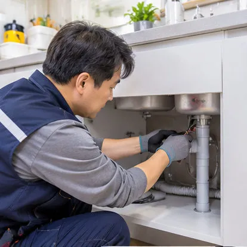

우리 집 수리,
사진 한 장으로 시작하세요.
수도·배관부터 조명·문 수리까지.
문제를 알려주시면 기사 견적과 예약 과정을 연결해 드립니다.
내 지역 작업을 찾고
견적을 제안하세요.
공식 수리단가 10% · 선불 캐시 정책
회원도 비회원도
간편하게 접수
견적 확인 · 방문 예약 · A/S 흐름
어떤 수리가 필요하세요?
수리 분야를 선택하면 고객 접수 화면으로 이어집니다.
사진으로 살펴보는 수리 분야
작업 사진은 실제 현장 촬영이 아닌 AI 생성 예시입니다.
집손봄은 수리 요청 접수와 수리기사 매칭·견적·예약 절차를 지원하는 플랫폼입니다. 고객이 승인한 실제 수리 작업의 시공 품질, 기사 귀책 하자보수 및 A/S 등 계약상 사후관리의 1차 책임은 해당 수리기사에게 있습니다. 고객은 집손봄을 통해 A/S·분쟁을 접수할 수 있으며 집손봄은 접수·전달·처리 이력 및 관련 법령상 의무를 이행합니다. 해당 고지는 집손봄의 법률상 책임을 배제하지 않습니다.
복잡한 수리도 간단한 네 단계
고객과 기사가 같은 접수번호로 진행상태를 확인합니다.
문제 사진과 수리 내용을 등록
기사가 작업을 선택하고 견적 제안
고객이 승인하고 방문일정 확정
작업 확인 및 A/S 진행
기술이 있다면, 새로운 작업을 만나보세요.
기사 승인 후 지역에 맞는 작업을 확인하고 견적을 제안하세요.
캐시 선충전 · 예약 시 공식 수리단가 10% 보류 · 정상완료 후 차감.
내 집 수리, 한곳에서 관리하세요
접수부터 견적·예약·A/S까지 같은 접수번호로 이어집니다.
집손봄은 수리 요청 접수와 수리기사 매칭·견적·예약 절차를 지원하는 플랫폼입니다. 고객이 승인한 실제 수리 작업의 시공 품질, 기사 귀책 하자보수 및 A/S 등 계약상 사후관리의 1차 책임은 해당 수리기사에게 있습니다. 고객은 집손봄을 통해 A/S·분쟁을 접수할 수 있으며 집손봄은 접수·전달·처리 이력 및 관련 법령상 의무를 이행합니다. 해당 고지는 집손봄의 법률상 책임을 배제하지 않습니다.
시연 전용 · 접수, 견적, 예약, 수리 이력과 A/S. 실제 로그인·파일 전송·신청은 차단됩니다.
회원으로 이용
회원가입과 로그인 화면의 진입 위치입니다. 계정 서비스는 개발 서버 연동 전까지 차단됩니다.
비회원으로 바로 접수
가입 없이 접수 가능하며 실제 서비스에서는 접수별 인증·만료 권한을 적용합니다.
📷 사진으로 수리 접수하기
내 접수·견적·예약 상태 (시연)
모든 데모 접수표시DEMO-101 · 수전·배관 · 예시 지역 A
배수관 연결 부위 점검 요청
기사 견적 미제출

DEMO-102 · 전기·조명 · 예시 지역 B
점등이 끊기는 증상 확인
기사 견적 72,000원

DEMO-103 · 문·창호 · 예시 지역 C
방문 시간 조율 예시
기사 견적 95,000원
수리 이력 (시연)
- 배관 연결 점검 · 예시 작업 완료 · A/S 검토 화면 확인 가능
A/S 및 문의
수리 완료 후 작업 내역을 확인하고 A/S를 요청하는 흐름입니다. 공개 미리보기에서는 예시만 제공합니다.
내 지역 작업과 캐시를 한 번에
기사 가입·관리자 승인 이후 작업 자율선택 · 견적 · 예약 · 완료
기사는 자신이 수락하고 수행한 수리의 적정 시공, 안전조치, 귀책 있는 하자에 대한 보수 및 적용된 A/S 정책에 따른 사후관리의 1차 책임을 부담합니다. 고객의 A/S 요청에 성실히 답변하고 증빙과 처리이력을 플랫폼에 남겨야 합니다. 기사 귀책 재작업은 원작업에 연결하고 추가 플랫폼 캐시 과금을 자동 적용하지 않습니다. 귀책 여부는 계약·작업범위·증빙을 기준으로 검토하며 일방 주장만으로 확정하지 않습니다.
시연 전용 · 등록 심사, 작업게시판, 견적, 방문 및 완료, 거래이력. 실제 신청·충전은 차단됩니다.
💜 기사 선불 캐시 지갑
거래 이력 시연 · 충전 차단캐시 거래 내역
내 지역 수리 작업게시판
모의 데이터 · 실제 고객 정보 비노출DEMO-101 · 수전·배관 · 예시 지역 A
배수관 연결 부위 점검 요청
기사 견적 미제출
DEMO-102 · 전기·조명 · 예시 지역 B
점등이 끊기는 증상 확인
기사 견적 72,000원
DEMO-103 · 문·창호 · 예시 지역 C
방문 시간 조율 예시
기사 견적 95,000원
방문 일정·수리 진행 (시연)
- 오후 2:00 · 현관문 손잡이 점검 · 방문 예정
- 오후 4:00 · 배관 연결 점검 · 작업 완료 예시
집손봄 공식 수리단가 10% 계산기
공식 수리단가표 미승인 상태이므로 아래 금액은 테스트 입력값입니다. 실제 고객 견적은 차감 기준이 아닙니다.
원 미만 처리·복합작업 과금단위·VAT·법률/세무/PG 검토는 아직 출시 전 필수 확인사항입니다.
수리업체·기사팀 운영센터
기존 수리업체의 소속기사·일정·작업·지급증빙·조직권한을 보존합니다. 공사업체 계약 수수료와 별도입니다.
시연 전용 · 등록·승인, 소속기사, 배정과 일정. 실제 조직정보 전송은 차단됩니다.
기존 수리업체·소속기사 기능 보존 데모
파트너 소속기사 관리
기사별 자격, 지역, 활동 상태, 매칭 기록과 소속 관계를 관리합니다.
작업·방문 일정 관리
기사 일정과 현장 작업을 확인하고 이력 및 정산 자료와 연결합니다.
소속 기사 (시연용)
수도·배관 / 문·창호 · 승인 대기
전기·조명 / 설치 · 서류 검토
작업 배정·일정 (시연)
- 기사 샘플 A · 오후 2:00 · 예시 구역 A · 배관 방문 배정
- 기사 샘플 B · 오후 4:00 · 예시 구역 B · 전기 점검 배정
기존 기사팀 기능 메뉴
기사 개인 캐시는 본인에게 귀속되고 공식단가 10%만 적용합니다. ④ 공사업체 계약체결형 수수료는 이 화면에 적용되지 않습니다. 실제 조직 가입·소속·지급·정산은 서버 구현 전 시연입니다.
공사업체 광고 · 공사 매칭 센터
공사업체 홍보, 고객 공사문의, 현장상담·견적, 계약체결 보고, 계약검증 및 별도 매칭 수수료를 관리하는 전용 화면입니다.
개정안 참고 · 공사업체 기능 시연. 실제 등록, 계약 및 청구는 차단됩니다.
업체 광고·서비스 소개
AI 사진 · 실적 아님
공사업체 A · 인테리어
공사업체 프로필·포트폴리오의 배치 예시입니다. 실제 사업자·면허 인증을 나타내지 않습니다.
공사업체 B · 시설공사
광고여부 명확 표시, 실제 사업자정보·공사업 자격·보험 확인은 서버 기능으로 개발해야 합니다.
고객 요청에서 계약 확인까지
거래 흐름 시연계약·대금·A/S 책임 및 수수료 원칙
광고·소개와 공사 계약 중개는 생활수리와 별도 영역입니다. 수수료율·부과 조건·VAT·청구 정책이 확정되기 전까지 이 화면은 예시만 제공합니다.